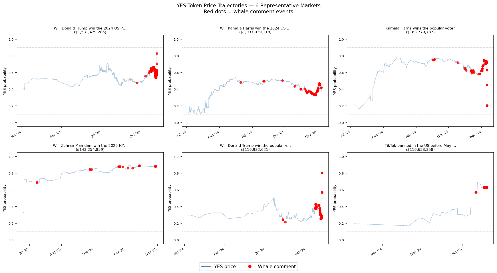
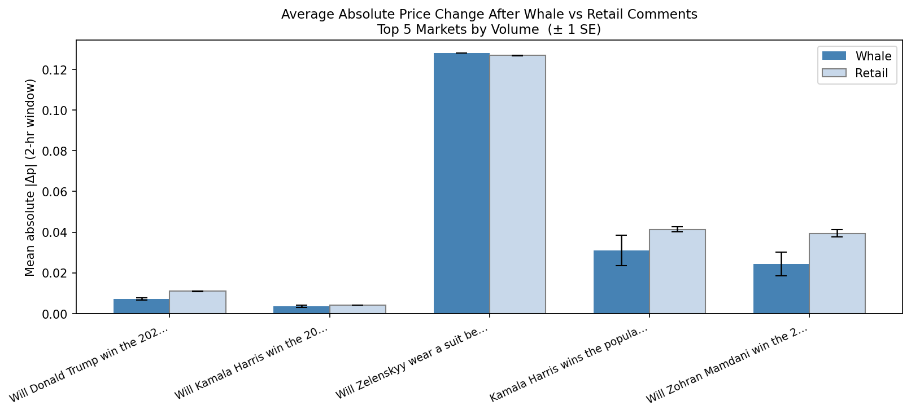
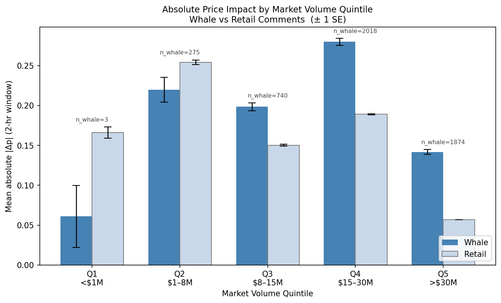
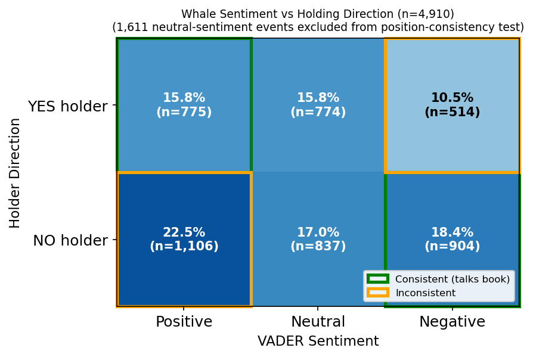

The Question
Prediction markets like Polymarket let participants bet real money on future events. Users with large positions — sometimes called whales — can also post public comments visible to all traders. This project asks whether those comments are associated with subsequent price moves, whether the association is stronger in thinner markets (a signature of manipulation), and whether whale sentiment tends to align with their financial position in a way that suggests strategic behavior.
These are difficult questions to answer observationally. The main threat to any causal interpretation is confounding: whales may simply be more likely to comment when news breaks, and that same news moves prices. Separating a comment effect from an underlying event effect requires design choices that this study can partially but not fully address.
Mean |Δp| = 0.21 around whale comments vs. 0.10 for retail — about 2.2× larger. Whether this reflects a comment effect or selective timing is unclear from this design alone.
The whale–retail gap grows with market volume, not shrinks. This is inconsistent with thin-order-book manipulation but consistent with whales concentrating activity around major news events in high-profile markets.
Among 4,910 whale events with known holder direction, comment sentiment was consistent with the commenter's position 52.8% of the time. This is slightly above 50% but far from consistent strategic "talking their book."
The whale × log(volume) coefficient in M3 is near zero (p = 0.85). There is no evidence that whale comments have larger effects in thinner markets, which is what a herding or manipulation story would predict.
Data
Data were assembled from three Polymarket public REST APIs: the Gamma API (comments, market metadata), the CLOB API (hourly YES-token price series), and the Data API (per-market top-200 holder positions). Markets span September 2023 through June 2026 across elections, geopolitics, crypto, and politics.
Whale definition: Any commenter whose wallet appears in the market's top-200 holder list with a position ≥ $5,000 USD. Of 503,662 total events, 4,910 (1.0%) are whale events across 87 markets. Mean whale position: $83,039 (median: $34,186).
Starting from 2,677,233 raw comment events across 470 markets, three filters reduce the sample: (1) events with no matchable price observation within ±7 days are dropped; (2) events where the pre-comment price is <0.10 or >0.90 are removed (convergence filter); (3) markets with std(|Δp|) < 0.001 are dropped for having effectively constant price histories. Fed Policy markets are excluded as they show no meaningful whale activity. The final sample is 503,662 events from 183 markets.
| Market Type | Example Markets | Markets | With Whales |
|---|---|---|---|
| US Elections | Trump Win, Harris Win, Popular Vote | 8 | 8 |
| Geopolitics | Iran ceasefire, Ukraine, Israel–Gaza, TikTok ban | 40+ | 25+ |
| Elections (International) | South Korea, Romania, Ireland, NYC Mayor | 30+ | 15+ |
| Crypto & Tech | Bitcoin price, Ethereum ETF, Trump coin | 30+ | 20+ |
| Other | FIFA World Cup, economic indicators | 70+ | 20+ |
Methods
-
Event study windows. For each comment, find the nearest observed YES-token price strictly before the comment and the nearest at or after the comment, within a ±7-day window. price_change = price_after − price_before. Median gap: ~25 hours on each side, confirming the 7-day window is not binding for most events.
-
Whale tagging. Cross-reference each commenter's wallet address against the top-200 holders list. A comment is a "whale event" if the commenter holds ≥ $5,000 in the market.
-
VADER sentiment. Each comment body is scored using the VADER lexicon (Hutto & Gilbert 2014), producing a compound score ∈ [−1, +1].
-
Pooled OLS (market fixed effects). DV = signed price change after each comment. Tests whether whale events predict larger moves, controlling for each market's baseline behavior.
-
Cross-market regression. DV = difference in mean |Δp| between whale and retail events per market. IV = market volume. Tests whether the whale–retail gap is larger in smaller, thinner markets.
-
Position-direction analysis. Classify each whale as YES or NO holder (from outcomeIndex in holder data). Test whether comments are sentiment-consistent with position, and whether prices moved in the whale's financial favor.
Results


Pooled OLS Regression Results
| Variable | M1 (FE) | M2 (FE + sent.) | M3 (Vol. int.) | M4 (Position) |
|---|---|---|---|---|
| Main effects | ||||
| Whale comment (0/1) | +0.0200 (0.00207) |
+0.0200 (0.00207) |
+0.0475 (0.0396) |
−2.013 (0.187) |
| Sentiment (VADER compound) | — | +0.000490 (0.000390) |
−0.00422 (0.000540) |
−0.00813 (0.00863) |
| log₁₀(Volume) | — | — | −0.0240 (0.000300) |
−0.296 (0.0247) |
| Interaction | ||||
| Whale × log(Volume) | — | — | −0.000950 (p = 0.85) (0.00496) |
+0.277 (0.0255) |
| log₁₀(Position size) | — | — | — | −0.0269 (0.00564) |
| Controls | ||||
| Market fixed effects | ✓ | ✓ | — | — |
| N | 511,893 | 511,893 | 511,893 | 7,582 |
| R² | 0.483 | 0.483 | 0.014 | 0.032 |
HC3 standard errors in parentheses. * p<0.05; ** p<0.01; *** p<0.001. M4 restricts to observations with known position size. Market FE and log(Volume) are mutually exclusive in M3–M4.


Discussion
The raw gap is real: mean |Δp| is 0.21 around whale comments versus 0.10 for retail across 503,662 events. Whether this gap reflects any effect of the comment itself is harder to say. The pattern in Figure 3 — where the gap is largest in the highest-volume markets — is not what a manipulation or herding story would predict, and the volume interaction in M3 (β = −0.001, p = 0.85) gives no support to the idea that whale comments are more influential in thinner markets. Taken together, these patterns are more consistent with selective timing than with price impact: whales appear to be more active around periods when prices are already moving, not causing them to move.
The position-consistency analysis offers a second angle. If whales were deliberately using comments to shift prices in their favor, you would expect their sentiment to track their holdings. At 52.8%, the consistency rate is close to chance. The NO-holder result is particularly notable: those holding shares that pay off only if the event does not occur posted positive sentiment 57.9% of the time, which goes in the wrong direction for a pump-and-dump story. This is a descriptive finding and could reflect any number of things — NO holders may genuinely believe positive outcomes are possible, or may be commenting on other topics — but it does not support systematic strategic behavior.
Limitations
Several data constraints limit interpretation. Holder position data is a snapshot taken at or near market close, not at the time of the comment; a whale's position may have changed between the snapshot and the comment. The nearest-neighbor price window (median ~25 hours) is broader than ideal — price moves attributed to a comment may reflect many other events within that day. Some markets in the sample have very few whale events, making within-market estimates noisy. Finally, VADER sentiment applied to prediction-market language is imperfect; even with a custom lexicon, many comments are short, ambiguous, or use domain-specific slang that VADER may misclassify.
More useful future work would use minute-level price data to tighten the event window, match whale comment days to non-comment days with similar prior price volatility as a control, and obtain historical holder snapshots at comment time rather than at resolution.